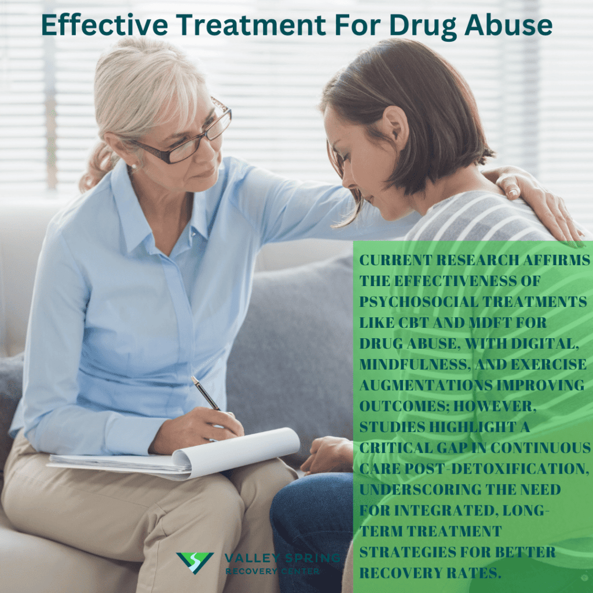

ABOUT ME
WHAT IS DRUG ABUSE

Drug abuse and drug menace is the illicit, non-medical use of limited number
of substances, most of
drugs which have the properties of altering the mental
state of a being in ways that are considered
by social norms and defined by statute to be
inappropriate, undesirable, harmful threatening to the
life of the user and to the society at large.
Alcohol, heroin, cocaine, opium, marijuana, are some of
the drugs abused.
Generally, the youth seem to be the target of this
drug menace and its abuse. Curiosity, peer
pressure, and availability of drugs such as cigarettes
and alcohol are the immediate causes of drug
abuse amongst the youth. In the company of bad associates,
friends are pressured to indulge in the
use of drugs especially, in the senior high schools.
On our television stations and on our radio
stations, there is a “naked” advertisement of alcohol,
cigarettes and other non-medicated drugs.
These are harmful drugs that are being presented to be
good enhancing performance. These drugs
are even shown to the public as a laxative and the most
annoying thing is that places where these
could be bought in large quantities are announced to the
public. This availability of drugs to the
youth and the society proves a cause and a cancer to society.
“Curiosity,” it is said, “kills the cat.” The youth of today are
very inquisitive and curious. They would
like to test the efficacy of whatever they see and hear of.
this curiosity at times becomes fatal even
to the point of death. Some by their curiosity go into deal with
drugs and become addicts. In this
paper, the author wants to explore the causes, effects and
control of this menace and also wants to
highlight the social and cultural aspects of drug abuse.
Keywords: Drug menace, Peer pressure, Bad associates,
Naked advertisements
FACTS AND STATISTICS ON GRUG ABUSE IN TEEN
Almost 50% of high school seniors have abused a
drug of some kind.
By 8th grade, 15% of kids have used marijuana.
43% of high school seniors have used marijuana.
8.6% of 12th graders have used hallucinogens – 4%
report on using LSD specifically.
Over 60% of teens report that drugs of some kind
are kept, sold, and used at their school.
1 in every 9 high school seniors has tried synthetic
marijuana (also known as “Spice” or “K2”).
1.3% of high school seniors have tried bath salts.
64% of teens say they have used prescription pain
killers that they got from a friend or family member.
28% of teens know at least one person who has
tried ecstasy.
7.6% of teens use the prescription drug Aderall.
Over 5% of 12th graders have used cocaine and over
2% have used crack.
More teenagers die from taking prescription drugs
NEGATIVE CONSEQUENCES OF DRUG ABUSE
1.Addiction
2.Health problems (e.g., organ damage, infections)
3.Mental health issues (e.g., depression, anxiety)
4.Social relationships problems
5.Financial difficulties
6.Legal troubles
7. Loss of employment or education opportunities
8.Increased risk of accidents and injuries
9. Malnutrition and weight changes
10. Sleep disturbances
11.Cognitive impairment
12.Increased risk of infectious diseases (e.g., HIV, hepatitis)
13.Tooth decay and gum disease
14.Skin problems (e.g., acne, abscesses)
15.Respiratory issues (e.g., bronchitis, pneumonia)
16.Cardiovascular problems (e.g., heart attack, stroke)
17.Increased risk of overdose and death
18.Withdrawal symptoms when trying to quit
19.Loss of motivation and interest in activities
20.Strained relationships with family and friends
Here’s a list of commonly abused drug types, categorized for clarity:
1. Depressants
Examples: Alcohol, benzodiazepines (e.g., Valium, Xanax), barbiturates.
Effects: Relaxation, sedation, slowed brain function.
Abuse: Often misused for their calming effects.
2. Stimulants
Examples: Cocaine, methamphetamine, prescription stimulants (e.g., Adderall, Ritalin).
Effects: Increased energy, alertness, euphoria.
Abuse: Common for performance enhancement or recreational use.
Examples: Heroin, fentanyl, prescription painkillers (e.g., oxycodone, morphine).
Effects: Pain relief, euphoria.
Abuse: High risk of addiction and overdose.
4. Hallucinogens
Examples: LSD, psilocybin (magic mushrooms), DMT.
Effects: Altered perception, hallucinations.
Abuse: Used recreationally for mind-altering experiences.,
5. Cannabis
Examples: Marijuana, hashish.
Effects: Relaxation, altered perception, euphoria.
Abuse: Common for recreational or self-medicating purposes.
6. Synthetic Drugs
Examples: Synthetic cannabinoids (e.g., Spice, K2),
synthetic cathinones (e.g., bath salts).
Effects: Unpredictable, can mimic stimulants or depressants.
Abuse: Popular due to availability and potency.
7. Inhalants
Examples: Paint thinners, glue, nitrous oxide (laughing gas).
Effects: Euphoria, dizziness, loss of coordination.
Abuse: Misused for their quick effects.
Would you like more details or a specific focus on any of these categories?
HEROIN
CANABINOIDS
SMOKE VAPE
LSD
COCAINE
[BP HARM]
MARIJUANA
WHAT CAUSES DRUG ABUSE?
Drug abuse causes.
The causes of drug abuse involve different factors that may explain why someone
who abuses drugs has engaged in such behavior around harmful substances.
The causes of drug abuse are listed below.
Accessibility
Social factors
Environmental factors
Mental health conditions
Genetic predisposition
Lack of social support
Curiosity or experimentation
1. ACCESIBILITY
Accessibility is a term used to describe the degree to which a drug is
easily obtained or used by anyone. In a 2022 survey of 1,000 people
conducted by the Laguna Treatment Hospital, almost 70% of respondents
who acknowledged using illegal substances stated they had easy access to them.
Easy access to drugs causes substance abuse by increasing the chances of
a person trying out or experimenting with a drug and consequently abusing it.
For instance, if you live in a neighborhood where drugs of abuse are often
sold in secret, there is a greater chance that you may be offered such substances in your area.
Another example is if a family member takes prescription painkillers,
which are also often abused, someone who engages in drug abuse may take
those medications which are not intended for them, or forge or even
steal prescriptions to obtain a certain drug from a pharmacy.
2. SOCIAL FACTORS
Social factors are determined by various influences, including family
background, education, income, wealth, occupation, or religion, that can
affect someone’s risk for substance abuse.
Some examples of social factors that can contribute to drug abuse
are peer pressure, a desire to fit in, and stress from work or school.
These social factors can play a role in substance abuse by serving as the
driving forces that compel someone to use drugs in excess.
For instance, being in a group of friends that experiments with drugs may push
someone to engage in similar activities due to a desire to please and to avoid
disappointing other members of the social circle, or to feel included
and keep up with the group.
Another example is when an individual uses drugs in an attempt to deal
with daily life stressors, such as additional workload or pressure at school.
They may start using substances to feel relaxed or even to just temporarily
forget their problems, without thinking of the possibility that they may
develop more serious problems as a result of these habits in the future.
3. ENVIRONMENTAL FACTORS
In the book Stress: Concepts, Cognition, Emotion, and Behavior, published
by the Academic Press in 2016, W.R. Avison defines environmental factors
as social or economic circumstances that influence exposure to stressors.
They may also be categorized as social roles, social statuses,
or prevailing social circumstances.
Environmental factors can cause drug abuse by increasing the risk of
one’s exposure to harmful substances, such as drugs. These factors may
include family members engaging in drug use, parenting styles, social
media interactions, and unrealistic depictions of addiction in media.
For instance, children who grew up in an environment where family
members engage in drug abuse are exposed to substance use early in
life, and are therefore more likely to adopt the behavior in adulthood.
Many series, movies, or other forms of media have attempted to
portray addiction but only end up with unrealistic depictions
that border on glorifying addictive behaviors. One example is
the movie Wolf of Wall Street (2013), where Leonardo DiCaprio
plays scamming stockbroker Jordan Belfort.
According to a 2018 article from SBS (Special Broadcasting Service)
entitled, “The most (and least) accurate depictions of drug
addiction onscreen,” during a scene where Belfort tried crack,
his personality suddenly shifted into a party animal, where
in reality a strong substance like crack would cause someone
to initially be overwhelmed with such drastic changes that
the drug can cause in their state of mind.
4. MENTAL HEALTH CONDITION
Mental health conditions are clinically significant disruptions
in a person’s ability to think, regulate their emotions, or behave
, according to a fact sheet on mental disorders from
the World Health Organization.
Psychological disorders can cause drug abuse by increasing
the likelihood of an individual to self-medicate using legal
or illegal substances. However, an article entitled,
“Substance Use and Co-Occurring
Mental Disorders” from the National Institute of Mental
Health (NIH) states that although some medications may temporarily
alleviate some symptoms of mental problems, they may exacerbate the symptoms over time.
For instance, an individual suffering from depression may turn to
substances that can cause relaxation or numb pain, such as alcohol
or prescription drugs, to change their mood, face their fears,
or cope with unpleasant emotions.
On the other hand, someone dealing with uncomfortable emotions and terrifying
memories because of a past traumatic event may also use recreational drugs,
such as marijuana or stimulants, to relieve the stress associated with their situation.
5. GENERIC PREDISPOSITION
A genetic predisposition means that a person has a higher probability of
developing an illness based on their genetic makeup, according to an article
entitled, “What does it mean to have a genetic predisposition to a disease?” from medline Plus.
Genetic predisposition stems from specific genetic differences,
which are frequently inherited from one’s parents. It can cause drug
abuse by influencing the amount and types of receptors in a person’s brain,
the rate at which their bodies metabolize drugs, and how effectively they
respond to particular medications.
For instance, according to a 2019 article entitled, “Genetics: The Blueprint of Health and Disease,”
from the National Institute on Drug Abuse, family studies involving identical
twins, fraternal twins, adoptees, and siblings reveal that a person’s
genetic composition may account for up to half of his or her risk of
being addicted to nicotine, alcohol, or other drugs.
6. LACK OF SOCIAL SUPPORT
OECD (Organisation for Economic Co-operation and Development) data
states that a lack of social support reflects the percentage of
people who say they don’t have any friends or family members
they can count on in hard times.
Having no social support can play a role in drug abuse by
contributing to emotional distress due to a lack of connection
with other people, which may lead someone to connect with
anything around them – including drugs.
For instance, a 2019 study on the inverse relationship between perceived
social support and substance use frequency in socially stigmatized
populations published in Addictive Behaviors Reports found that in a
sample involving prisoners, higher lifetime alcohol, cannabis, and
tobacco usage is associated with lower social support.
7. CURIOSITY OR EXPERIMENTATION
Experimentation means that someone might experiment with drugs
out of curiosity about their effects or to blend in with their peers.
Drug use is often minimal during the experimental phase.
Experimenting with drugs can cause substance abuse later in life by
leaving lasting changes on a teenager or young adult’s brain, which
still continues to experience rapid changes at an early age. During
this time, an underdeveloped brain is more likely to learn and rely
on the rewarding effects of drugs, heightening the risk of drug abuse.
One example is when a teenager attends a school where drugs are being
used, sold, or kept. This increases the likelihood of them personally
knowing a classmate or schoolmate who sells drugs and subsequently
experimenting with those illicit substances.
NOTE:
PREVENT DRUG ABUSE THROUGH EDUCATION AWAERNESS, HEALTHY COPING
MECHANISMS, POSITIVE RELATIONSHIP, AND SEEKING HELP WHEN NEEDED;
AVOID PEER PRESSURE AND SUBSTANCE EXPOSURE
